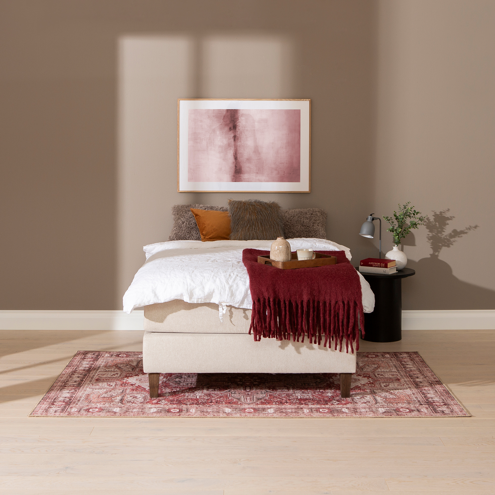
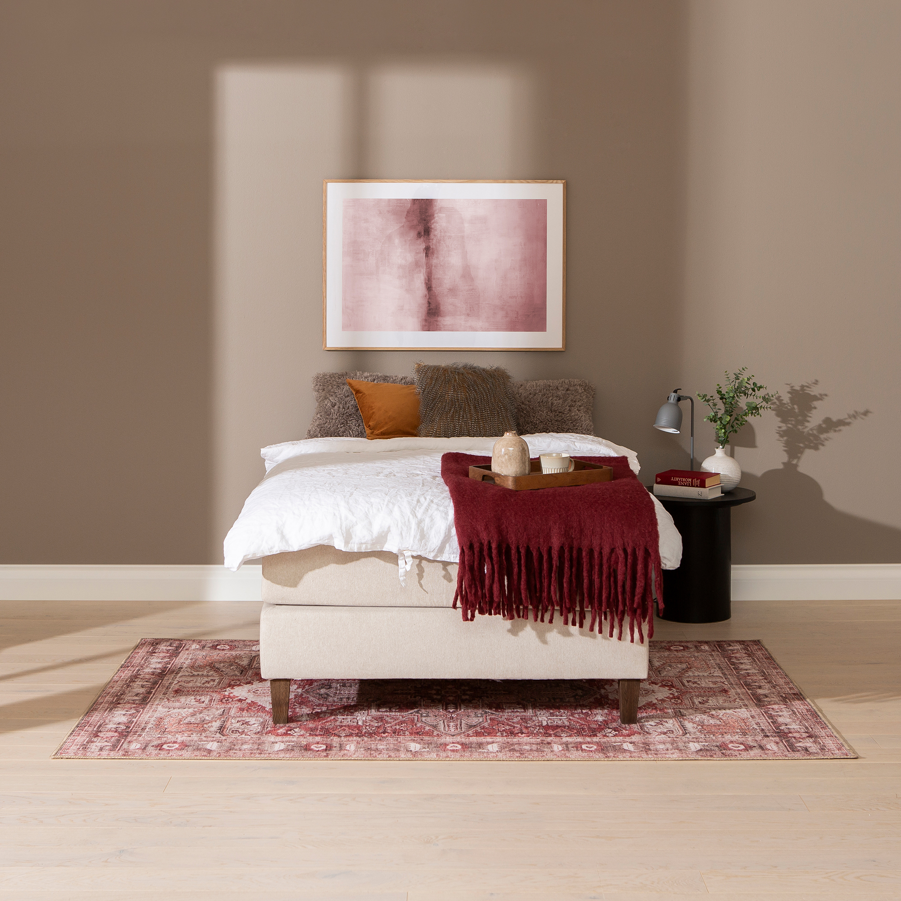

Moon Gold continental bed 120x200, visco, Primo 05 beige
197727

 



Description
Experience restful sleep combined with timeless elegance with the Moon Gold continental bed in 120x200 cm size, upholstered in the soft and durable Primo 05 beige fabric. This continental bed belongs to the NEST & LIVING collection, offering a sophisticated yet practical sleeping solution designed to fit diverse needs and preferences with its Gold tier quality.
Choose between two comfort levels: a 7-zone pocket spring mattress that provides precise body support or a visco memory foam mattress that molds to your body shape, enhancing comfort night after night. The bed is elevated on oak-stained wooden legs, giving it a light and stylish appearance while ensuring robust support.
Customization is made simple — enhance your bed's comfort and style by adding toppers and headboards available for an additional charge, tailoring your sleeping environment to your exact desires. The frame is constructed from durable wood and chipboard, reflecting a commitment to longevity, and is backed by an extensive 4000-day quality guarantee.
Maintenance is effortless: regularly vacuum and wipe the upholstery with a damp cloth to keep your bed fresh and inviting. Enjoy the perfect balance of luxury, function, and design with the Moon Gold continental bed, a refined centerpiece for your bedroom from the trusted NEST & LIVING collection.
Technical specifications
| Color options | Beige |
|---|---|
| Comfort options | 7-zone pocket spring mattress or visco memory foam mattress |
| Frame material | Durable wood and particleboard |
| Legs | Oak-stained wooden legs, 15 cm cone shape |
| Size | 120 × 200 cm |
| Upholstery material | Primo 05 fabric |
| Warranty | 4000-day quality guarantee |
| Included components | Bed frame with mattress base; topper and headboard sold separately |
| Tier | Gold |